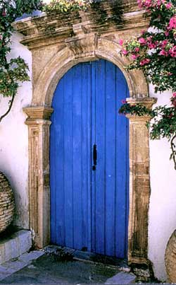

|

Ο τρόπος που χτίζουν οι ευγενείς τα σπίτια τους την ύστερη περίοδο της Ενετοκρατίας μαρτυρεί ότι οι πειρατικές επιδρομές αντιμετωπίζονται πλέον πιο αποτελεσματικά. Τα αρχοντικά της περιόδου αυτής δεν έχουν φρουριακό χαρακτήρα, είναι μικρότερα σε μέγεθος και δίνεται ιδιαίτερη έμφαση στην εξωτερική διακόσμηση. Αισθητή είναι η επίδραση της Δύσης με πρότυπα αρχιτεκτονικής, που έρχονται κυρίως μέσω της Κρήτης και αργότερα μέσω των νησιών του Ιονίου από τους Βενετούς κατακτητές. Τα πρότυπα αυτά, προσαρμοσμένα στις ιδιαιτερότητες του νησιού, επηρεάζουν την πρόσοψη των αρχοντικών. Είναι η τοξωτή πόρτα και ο τονισμός όλων των ανοιγμάτων (πόρτας και παραθύρων) με περίτεχνες παραστάσεις από πωρόλιθο.
Στα Κύθηρα, η διακοσμημένη παράσταση της πόρτας λέγεται «θύρωμα». Στην Κέρκυρα, «πορτόνι».
Τα παράθυρα στολίζονται όχι μόνο με παραστάσεις. Κάτω από τα παράθυρα στέκουν λουλουδιέρες, στηριγμένες σε περίτεχνα «φουρούσια», φερμένα και αυτά από τη Δύση και δουλεμένα με ιδιαίτερη αγάπη από ντόπιους τεχνίτες.
|
|